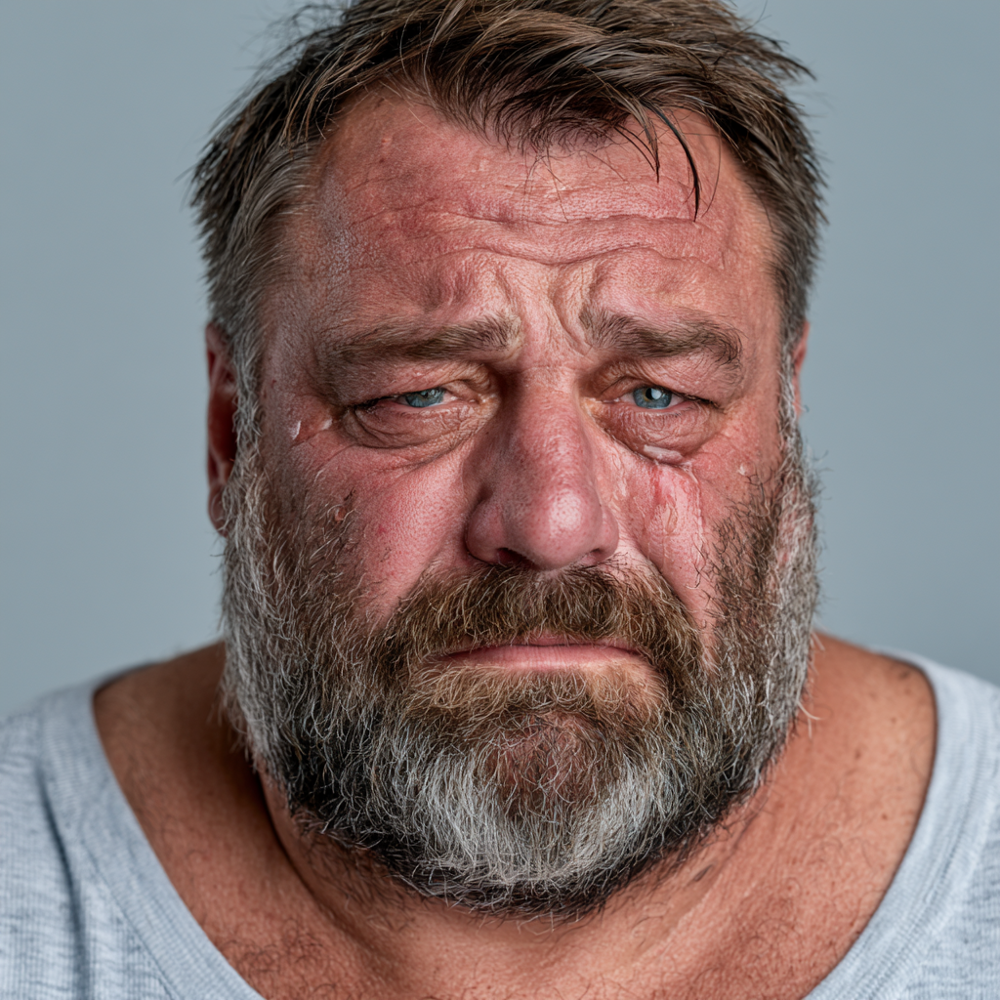
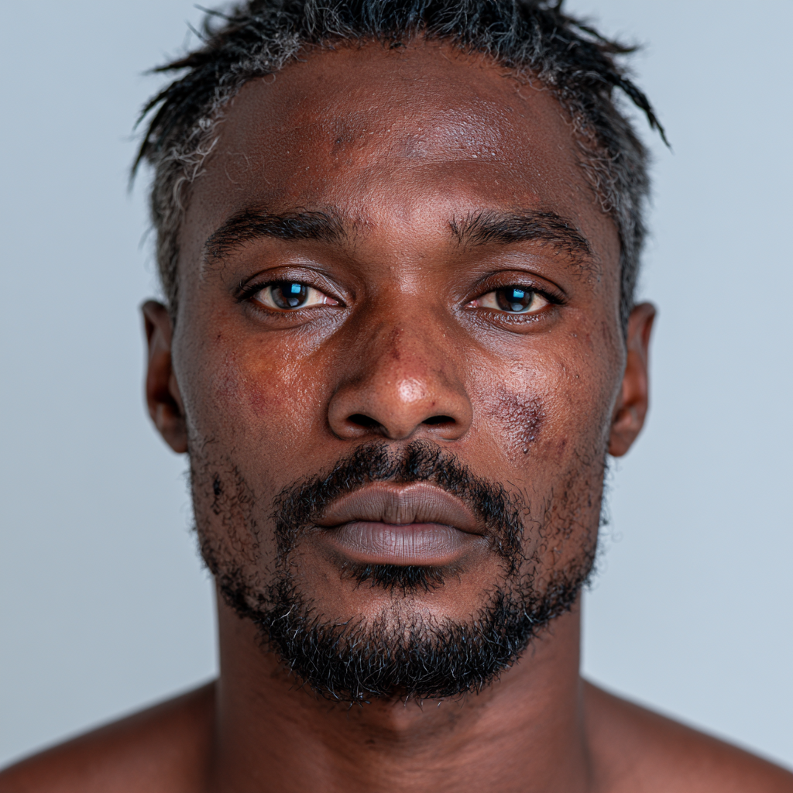

Bethel Community
The Class of Right Now

But God
None of this gets fixed by magic. But God is on time, every time, and he is still in control.
“My times are in your hand.”Psalm 31:15


None of this gets fixed by magic. But God is on time, every time, and he is still in control.